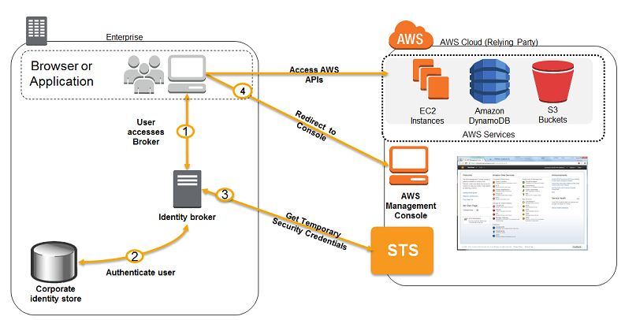

Test Report
Review questions
Jun 16, 2019 11:56PM EDT
 45 incorrect
45 incorrectYour answer
B. Manage encryption keys in a Hardware Security Module (HSM) appliance on-premise server with sufficient storage to temporarily store, encrypt, and upload files directly into amazon Glacier.
C. Manage encryption keys in amazon Key Management Service (KMS), upload to amazon simple storage service (s3) with client-side encryption using a KMS customer master key ID and configure Amazon S3 lifecycle policies to store each object using the amazon glacier storage tier.
D. Manage encryption keys in an AWS CloudHSM appliance. Encrypt files prior to uploading on the employee desktop and then upload directly into amazon glacier
Correct answer is C - With CSE-KMS the encryption happens at client side before the object is upload to S3 and KMS is cost effective as well
Refer AWS documentation - S3 Client Side Encryption
CloudHSM and HSM are not a cost effective options ruling out option B and D.
Option A does not work as Storing data on-premises temporarily would also cost as HA needs to be implemented
Your answer
B. Configure the SG of the instance to block any outbound traffic to the FQDN of the API endpoint or its return traffic
C. Configure Layer-7 filtering on the NAT Gateway in the VPC and add a DNS blacklist entry
D. Use an 'on instance' proxy and configure this to perform DNS resolution and only allow traffic which doesn't breach security restrictions.
Correct answer is D as the traffic needs to be restricted using DNS names, it can be achieved using an 'on instance' proxy.
Refer AWS documentation - Controlling VPC Egress Traffic
A forward proxy server acts as an intermediary for requests from internal users and servers, often caching content to speed up subsequent requests. Companies usually implement proxy solutions to provide URL and web content filtering, IDS/IPS, data loss prevention, monitoring, and advanced threat protection. AWS customers often use a VPN or AWS Direct Connect connection to leverage existing corporate proxy server infrastructure, or build a forward proxy farm on AWS using software such as Squid proxy servers with internal Elastic Load Balancing (ELB).
Web proxy servers are the most common type of proxy server used today. Web proxies control HTTP and HTTPS traffic and have ubiquitous support from web clients such as web browsers, web command line tools, programming tools, and web application servers. SOCKS proxy servers, although less common than web proxies, leverage custom SOCKS proxy clients to control any type of IP network traffic. In either case, each EC2 instance must be configured (typically through initial instance bootstrapping or application deployment and configuration) to leverage the proxy solution at either the OS or application level.
Options A, B & C are wrong as they do not provide the ability to filter traffic based on DNS.
AWS SAP-C01 Question feedbackYour answer
B. EBS with Provisioned IOPS (PIOPS) to store I/O files. SNS to distribute elaboration commands to a group of hosts working in parallel Auto Scaling to dynamically size the group of hosts depending on the number of SNS notifications
C. S3 to store I/O files, SNS to distribute elaboration commands to a group of hosts working in parallel. Auto scaling to dynamically size the group of hosts depending on the number of SNS notifications
D. EBS with Provisioned IOPS (PIOPS) to store I/O files SQS to distribute elaboration commands to a group of hosts working in parallel Auto Scaling to dynamically size the group to hosts depending on the length of the SQS queue.
Key point here is to reduce the processing time, files are high and concentrated only during few hours and maintaining availability.
Correct answer is A, as the files can be stored in S3 as a common location which can be shared and access from multiple instances and scaled as per the demand.
Option B and C are wrong as SNS is not a right service for load distribution
Option D is wrong as EBS does not provide a scalable and sharable storage option. It cannot be shared across the instances.
AWS SAP-C01 Question feedbackPoints : 5 out of 5
Your answer
B. Store the video contents to Amazon S3 as an origin server. Configure the Amazon CloudFront distribution with a download option to stream the video contents
C. Launch a streaming server on Amazon Elastic Compute Cloud (EC2) (for example, Adobe Media Server), and store the video contents as an origin server. Configure the Amazon CloudFront distribution with a download option to stream the video contents
D. Launch a streaming server on Amazon Elastic Compute Cloud (EC2) (for example, Adobe Media Server), and store the video contents as an origin server. Launch and configure the required amount of streaming servers on Amazon EC2 as an edge server to stream the video contents
Key point here is scalable architecture with cost effectiveness with support to stream videos.
Correct answer is B as the requirement is more for on-demand streaming platform on multiple devices. CloudFront can support the streaming of videos using the download option configured for progressive option.
Refer to AWS documentation for Video Streaming using CloudFront
Option A is wrong as RTMP or streaming is an Adobe protocol and did not work with all devices esp. IOS
Option C & D are wrong as the requirement is for an on-demand platform as well as not cost effective as compare to S3.
AWS SAP-C01 Question feedbackYour answer
B. Upload all static files to Amazon S3 and create a CloudFront distribution serving those static files.
C. Duplicate half your web infrastructure on AWS, offload the DNS to Route 53 and configure weighted based DNS routing to send half the traffic to AWS.
D. Create a CloudFront CDN, enable query string forwarding and configure suitable TTL. Offload the DNS to AWS to handle CloudFront CDN traffic but use on-premise load balancers as the origin.
Correct answer is D as CloudFront can be configured with custom origin. Also as it is a news company, CloudFront can help scale and handle additional load.
Option A is wrong as OpsWorks is used to build orchestration and will only help speed up environment setup but not reduce load or scale.
Option B is wrong as the site is not entirely static.
Option C is wrong as time is the constraint, replicating the environment would not be an option.
AWS SAP-C01 Question feedbackYour answer
B. AWS reserves one IP address in each subnet’s CIDR block for Route 53 so you do not have enough addresses left to launch all of the new EC2 instances.
C. AWS reserves the first and the last private IP address in each subnet’s CIDR block so you do not have enough addresses left to launch all of the new EC2 instances.
D. The ELB has scaled-up. Adding more instances to handle the traffic reducing the number of available private IP addresses for new instance launches
E. AWS reserves the first four and the last IP address in each subnet’s CIDR block so you do not have enough addresses left to launch all of the new EC2 instances.
E. AWS reserves the first four and the last IP address in each subnet’s CIDR block so you do not have enough addresses left to launch all of the new EC2 instances.
Correct answer is D & E
Option E as AWS reserves first four IP addresses and the last IP address in each subnet CIDR block, and cannot be assigned to an instance
Option D as ELB being a managed AWS service scales up as the demand increases and would take some ip address
Option A is wrong as IGW is managed by AWS and does not take reduce private IP addresses from the subnet
Option B & C are wrong as AWS reserves first 4 and last IP address in each subnet's CIDR block.
AWS SAP-C01 Question feedbackYour answer
B. Purchase 4 reserved nodes and rely on on-demand instances for the fifth node, if required
C. Purchase 2 reserved nodes and utilize 3 on-demand nodes only for peak usage times
D. Purchase 4 reserved nodes and bid on spot instances for the extra node usage required
Correct answer is B as the 4 nodes are expected to run always, purchasing reserved instances for four nodes will reduce overall costs. The fifth node is expected to run, at most, one day which can be an on demand instance, which is the best possible cost option in relationship to reserved instances.
Option A is wrong as the 5th reserved node is not needed and would lead to cost overhead
Option C is wrong as the usage is guaranteed for 4 nodes to run continously, reserved instances would help in cost saving
Option D is wrong as Spot instances cannot be guaranteed to run and would be used in case the application is able to recover from a sudden termination of the node.
AWS SAP-C01 Question feedbackYour answer
B. Configure a CloudFront distribution and configure the origin to point to the private IP addresses of your Web servers. Configure a Route53 CNAME record to your CloudFront distribution.
C. Place all your web servers behind ELB. Configure a Route53 ALIAS-Record to point to the ELB DNS name.
D. Assign EIP's to all web servers. Configure a Route53 A-Record set with all EIPs with health checks and DNS failover.
E. Configure ELB with an EIP. Place all your Web servers behind ELB Configure a Route 53 A record that points to the EIP
D. Assign EIP's to all web servers. Configure a Route53 A-Record set with all EIPs with health checks and DNS failover.
Correct answer is C & D as the key point here is HA solution
Option C as you can use ELB and configure CNAME to point to ELB DNS, need to be alias for non zone apex record.
Option D as you can have EIPs assigned and switched for HA and have them configured with Route 53 record set. Refer AWS documentationdocumentation
Option A is wrong as NAT is for internet connectivity for instances in private subnet and not to route traffic in.
Option B is wrong as CloudFront is more of a caching solution for scalability rather than HA
Option E is wrong as you cannot associate a EIP with ELB
AWS SAP-C01 Question feedbackYour answer
B. Associate an IAM S3 role to the bucket, list the object versions using the Amazon S3 API, and then get the latest object.
C. Associate an IAM EC2 role to the instances, list the object versions using the Amazon S3 API, and then get the latest object.
D. Associate an IAM EC2 role to the instances, and then simply get the object from Amazon S3, because the default is the current version.
E. Store the IAM credentials in the Amazon EC2 user data for each instance, and then simply get the object from S3, because the default is the current version.
Correct answer is D as IAM Role is a preferred secure way to access S3 from EC2. Also, accessing the object from S3 would return the current version by default.
Option A is wrong as DynamoDB is not a preferred choice for saying configurations and adding additional component would not be cost-effective.
Option B is wrong as its IAM EC2 role and you don't need to list object versions.
Option C is wrong as you don't need to list object versions.
Option E is wrong as storing IAM credentials in user data is not secured.
AWS SAP-C01 Question feedbackYour answer
B. Migrate the medicalimages data to an EFS file system configured to operate within all AZ's in that region. Configure the EC2 instances on boot to map the EFS file system.
C. Configure the application install scripts within a launch configuration and use this for an auto-scaling group with a 1:1:1 configuration.
D. Configure recovery on the EC2 instance and ensure fault-tolerance is enabled for both the EC2 and EBS components
E. Create a new EC2 instance; install the application. Stop the instance and create an AMI - use this for a Launch template and auto-scaling group with a 1:1:1 configuration.
E. Create a new EC2 instance; install the application. Stop the instance and create an AMI - use this for a Launch template and auto-scaling group with a 1:1:1 configuration.
Correct answers are B & E
Option B as using EFS will allow seamless sharing of the file system across instances in AZs.
Amazon Elastic File System (Amazon EFS) provides a simple, scalable, elastic file system for Linux-based workloads for use with AWS Cloud services and on-premises resources. It is built to scale on demand to petabytes without disrupting applications, growing and shrinking automatically as you add and remove files, so your applications have the storage they need – when they need it. It is designed to provide massively parallel shared access to thousands of Amazon EC2 instances, enabling your applications to achieve high levels of aggregate throughput and IOPS with consistent low latencies. Amazon EFS is a fully managed service that requires no changes to your existing applications and tools, providing access through a standard file system interface for seamless integration. There is a Standard and an Infrequent Access storage class available with Amazon EFS. Using Lifecycle Management, files not accessed for 30 days will automatically be moved to a cost-optimized Infrequent Access storage class, giving you a simple way to store and access active and infrequently accessed file system data in the same file system while reducing storage costs by up to 85%. Amazon EFS is a regional service storing data within and across multiple Availability Zones (AZs) for high availability and durability. You can access your file systems across AZs, regions, and VPCs and share files between thousands of Amazon EC2 instances and on-premises servers via AWS Direct Connect or AWS VPN.
Option E as creating a pre-baked AMI would reduce the startup time improving the RTO. Also, with Auto Scaling with min/max/desired as 1 would ensure the instance are recreated in the available AZ.
Option A is wrong as there is no Two Zone option with EBS. EBS volume are specific to AZ and can be attached only to a single instance at a time.
Option C is wrong as using user data scripts at launch would not meet the RTO of 15 minutes.
Option D is wrong as there is no fault tolerance option and its needs to be enabled using different recovery techniques.
AWS SAP-C01 Question feedbackYour answer
B. Create encryption keys for each of the resources that need access and provide those keys to each user depending on the access required.
C. Create 3 new users on the production account with the various levels of permissions needed. Give each of the 20 users the login for whichever one of the 3 accounts they need depending on the level of access required.
D. Create 3 roles in the production account with a different policy for each of the access levels needed. Add permissions to each IAM user on the developer account.
Correct answer is D as the IAM best practice is to create 3 roles and allow the ability to the users to assume the role for appropriate access.
Refer AWS documentation - IAM Role Cross Account Access
You share resources in one account with users in a different account. By setting up cross-account access in this way, you don't need to create individual IAM users in each account. In addition, users don't have to sign out of one account and sign into another in order to access resources that are in different AWS accounts. After configuring the role, you see how to use the role from the AWS Management Console, the AWS CLI, and the API.
Your answer
B. Deploy the new application component as an Elastic Beanstalk application, read the data from the social media sites, store it in DynamoDB, and use Apache Hive with Amazon Elastic MapReduce for analytics.
C. Deploy the new application component in an Auto Scaling group of Amazon EC2 instances, read the data from the social media sites, store it in Amazon Glacier, and use AWS Data Pipeline to publish it to Amazon RedShift for analytics.
D. Deploy the new application component as an Amazon Elastic Beanstalk application, read the data from the social media site, store it with Amazon Elastic Block store, and use Amazon Kinesis to stream the data to Amazon CloudWatch for analytics.
Correct answer is B as the point here is durable data store with any time analytics the best option is to store the data in DynamoDB and use Apache Hive with Amazon Elastic MapReduce for analytics.
Refer AWS documentation - DynamoDB EMR Hive Processing
Option A is wrong as Elastic Block Store is not ideal for storing social media data
Option C is wrong as Amazon Glacier is not an ideal for storing social media data
Option D is wrong as Elastic Block Store is not ideal for storing social media data and CloudWatch is not for analytics.
AWS SAP-C01 Question feedbackYour answer
B. Create an AWS Systems Manager Parameter Store secure string for each API key. Encrypt the secure strings using a customer-managed AWS KMS customer master key (CMK). Create an IAM role for each environment with permissions to the kms:decrypt action for the CMK and the ssm:getparameter action for the proper API key. Launch each Amazon EC2 instance with the proper IAM role.
C. Create an Amazon DynamoDB table encrypted with an AWS KMS customer master key (CMK). Store each API key in a different item in the table. Create an IAM role for each environment with permissions to the kms:decrypt action for the CMK and the dynamodb:getitem action for the correct item. Launch each Amazon EC2 instance with the proper IAM role.
D. Pass the proper API key to each Amazon EC2 instance upon launch utilizing user data. Assign an IAM role to each EC2 instance with permissions to the kms:encrypt and the kms:decrypt actions for a customer-managed AWS KMS customer master key (CMK). In the user data script, encrypt the API key using the CMK. Store the encrypted API key on each EC2 instance.
Correct answer is B as AWS Systems Manager Parameter Store provides a secure storage for API keys with the ability for customer managed keys. Also, you should use IAM role to prevent hardcoding credentials.
Refer AWS documentation - Systems Manager Parameter Store
AWS Systems Manager Parameter Store provides secure, hierarchical storage for configuration data management and secrets management. You can store data such as passwords, database strings, and license codes as parameter values. You can store values as plain text or encrypted data. You can then reference values by using the unique name that you specified when you created the parameter. Highly scalable, available, and durable, Parameter Store is backed by the AWS Cloud.
Parameter Store offers the following benefits and features.
- Use a secure, scalable, hosted secrets management service (No servers to manage).
- Improve your security posture by separating your data from your code.
- Store configuration data and secure strings in hierarchies and track versions.
- Control and audit access at granular levels.
- Configure change notifications and trigger automated actions.
- Tag parameters individually, and then secure access from different levels, including operational, parameter, EC2 tag, or path levels.
- Reference AWS Secrets Manager secrets by using Parameter Store parameters.
- Use Parameter Store parameters with other Systems Manager capabilities and AWS services to retrieve secrets and configuration data from a central store. The following AWS services support Parameter Store parameters: Amazon EC2, Amazon Elastic Container Service, AWS Lambda, AWS CloudFormation, AWS CodeBuild, and AWS CodeDeploy.
- Configure integration with AWS Key Management Service (KMS), Amazon Simple Notification Service (SNS), Amazon CloudWatch, and AWS CloudTrail for encryption, notification, monitoring, and audit capabilities.
With AWS Systems Manager Parameter Store, you can create secure string parameters, which are parameters that have a plaintext parameter name and an encrypted parameter value. Parameter Store uses AWS KMS to encrypt and decrypt the parameter values of secure string parameters.
With Parameter Store you can create, store, and manage data as parameters with values. You can create a parameter in Parameter Store and use it in multiple applications and services subject to policies and permissions that you design. When you need to change a parameter value, you change one instance, rather than managing error-prone changes to numerous sources. Parameter Store supports a hierarchical structure for parameter names, so you can qualify a parameter for specific uses.
To manage sensitive data, you can create secure string parameters. Parameter Store uses AWS KMS customer master keys (CMKs) to encrypt the parameter values of secure string parameters when you create or change them. It also uses CMKs to decrypt the parameter values when you access them. You can use the AWS managed CMK that Parameter Store creates for your account or specify your own customer managed CMK.
Option A is wrong as using IAM user is not a best practice.
Options C & D are wrong as using DynamoDB and User data is not a secure and recommended way for passing sensitive data.
AWS SAP-C01 Question feedbackYour answer
B. Upload the certificate on an S3 bucket owned by the security officers and accessible only by the EC2 Role of the web servers.
C. Configure system permissions on the web servers to restrict access to the certificate only to the authorized security officers.
D. Configure IAM policies authorizing access to the certificate store only to the security officers and terminate SSL on an ELB.
Key point here is separation of access control.
Correct answer is D cert is not stored on the box and accessible only to the security officers and termination SSL on ELB does not expose the cert
Option A, B and C still expose the certificate on the EC2 box and being accessible to the EC2 service administrator who can login into the box
AWS SAP-C01 Question feedbackYour answer
B. Add an IP address condition to policies that specify that requests to EC2 instances should come from a specific IP address or CIDR block range.
C. Add policies which have deny and/or allow permissions on tagged resources
D. All actions listed here would provide additional layers of protection.
Correct answer is D as you can implement tagging and define proper permissions and restrictions on the tagged resource. you can also restrict the access to the EC2 resources to originate from known IP addresses only.
Refer AWS documentation IAM Access Policies
AWS SAP-C01 Question feedbackYour answer
B. Push web clicks by session to Amazon Kinesis and analyze behavior using Kinesis workers
C. Write click events directly to Amazon Redshift and then analyze with SQL
D. Publish web clicks by session to an Amazon SQS queue and periodically drain these events to Amazon RDS and analyze with SQL
Key point here is real time data capture and analytics
Correct answer is B as Kinesis helps to collect real time data capture and analyze using kinesis workers
Option A is wrong as S3 & EMR is not ideal for real time data ingestion and analytics
Option C is wrong as Redshift is not suitable for real time data ingestion and only allows jdbc/odbc data connection
Option D is wrong as SQS is not ideal for real time data ingestion. Also periodical analytics is not real time to be able to modify the behavior
AWS SAP-C01 Question feedbackYour answer
B. Increase the size (width/height) of the individual tiles at the maximum zoom level.
C. Decrease the size (width/height) of the individual tiles at the maximum zoom level.
D. Store the maximum zoom level in the low cost Amazon S3 Glacier option and only retrieve the most frequently access tiles as they are requested by users
E. Use Amazon S3 Reduced Redundancy Storage for each zoom level.
F. Use Amazon S3 Standard Storage for each zoom level.
B. Increase the size (width/height) of the individual tiles at the maximum zoom level.
F. Use Amazon S3 Standard Storage for each zoom level.
Key point here is to save cost.
Correct answer is A, B & F
Option A with CloudFront performs caching and helps reduce load on the origin services.
Option B as increasing the size of the images would help reduce the cost of GET/PUT requests on the origin server.
Option F as AWS recommends using S3 standard for storage as it is now more cost effective as compared to RRS
Option C is wrong as decreasing size would require more requests and increased expense
Option D is wrong as Glacier is more for archiving and not for serving requests
Option E is wrong as AWS recommends Standard over RRS.
Your answer
B. Continue to run your web front-end at 90% utilization, but purchase an appropriate number of utilization RIs in each availability zone to cover the loss of any of the other availability zones during peak load.
C. Continue to run your web front-end at 90% utilization, but leverage a high bid price strategy to cover the loss of any of the other availability zones during peak load.
D. Increase use of spot instances to cost effectively to scale the web front-end across all availability zones to lower aggregate utilization levels that will allow an availability zone to fail during peak load without affecting the applications availability.
Correct answer is A - Ideal for HA using auto scaling to reduce and distribute load and would the cost down
Option B is wrong as RIs would increase the cost further and is not needed
Option C is wrong as high bid price would neither guarantee instances and would increase cost as it would be similar to the On-Demand instances
Option D is wrong as Availability cannot be guaranteed
AWS SAP-C01 Question feedbackPoints : 5 out of 5
Your answer
B. Establish VPN Connections between the instances in each region. Rely on BGP to failover in the case of a region wide connectivity outage
C. Create a Route 53 Latency Based Routing Record Set that resolves to an Elastic Load Balancer in each region. Set an appropriate health check on each ELB.
D. Create a Route 53 Latency Based Routing Record Set that resolves to Elastic Load Balancers in each region and has the Evaluate Target Health flag set to true.
Correct answer is D as a Route 53 latency based routing can be configured with ELB in each region. If a region goes down, Route 53 would automatically redirect the traffic to the region with least latency.
With latency-based routing, Amazon Route 53 can direct your users to the lowest-latency AWS endpoint available. For example, you might associate a DNS name like www.example.com with an ELB Classic or Application Load Balancer, or with Amazon EC2 instances or Elastic IP addresses that are hosted in the US East (Ohio) and EU (Ireland) regions
Refer AWS documentation - Latency routing, AWS Blog for Multi Region Latency Routing & Route 53 - Evaluate target health
AWS SAP-C01 Question feedbackYour answer
B. Replace RDS with Redshift for the batch analysis and SQS to send a message to the on-premises system to update the dashboard
C. Create an RDS Read Replica for the batch analysis and SNS to notify the on-premises system to update the dashboard
D. Create an RDS Read Replica for the batch analysis and SQS to send a message to the on-premises system to update the dashboard.
Key point here to reduce load on the DB and email notification.
Correct answer is C as Read Replica can be used to scale the RDS to reduce load on the master DB. SNS can be used to send email.
Option A and B are wrong as Redshift is more of an data warehosuing solution rather then a transaction DB
Refer Redshift FAQs - When would I use Amazon Redshift vs. Amazon RDS?
Option B and D are incorrect as SQS cannot be used to send email to on-premises system. Or the on premises application would need modification to poll SQS for updates.
AWS SAP-C01 Question feedbackYour answer
B. The application authenticates against LDAP and retrieves the name of an IAM role associated with the user. The application then calls the IAM Security Token Service to assume that IAM role The application can use the temporary credentials to access the appropriate S3 bucket.
C. Develop an identity broker that authenticates against LDAP and then calls IAM Security Token Service to get IAM federated user credentials The application calls the identity broker to get IAM federated user credentials with access to the appropriate S3 bucket.
D. The application authenticates against LDAP the application then calls the AWS identity and Access Management (IAM) Security Token service to log in to IAM using the LDAP credentials the application can use the IAM temporary credentials to access the appropriate S3 bucket.
E. The application authenticates against IAM Security Token Service using the LDAP credentials the application uses those temporary AWS security credentials to access the appropriate S3 bucket.
C. Develop an identity broker that authenticates against LDAP and then calls IAM Security Token Service to get IAM federated user credentials The application calls the identity broker to get IAM federated user credentials with access to the appropriate S3 bucket.
Key point here is to understand IAM Identity providers and Federation
You can Request temporary credentials using either AssumeRole of GetFederationToken
Correct answer is B & C as B authenticates with LDAP and calls the AssumeRole and C uses Custom Identity broker implementation, with authentication with LDAP and using federated token
Option A & E are wrong as the application needs to authenticate against LDAP and not IAM.
Option D is wrong as you can't login to IAM using LDAP credentials

Your answer
B. Use Elastic Load Balancing to distribute traffic to a set of web servers. Use TCP load balancing on the load balancer and configure your web servers to retrieve the private key from a private Amazon S3 bucket on boot. Write your web server logs to a private Amazon S3 bucket using Amazon S3 server-side encryption.
C. Use Elastic Load Balancing to distribute traffic to a set of web servers, configure the load balancer to perform TCP load balancing, use an AWS CloudHSM to perform the SSL transactions, and write your web server logs to a private Amazon S3 bucket using Amazon S3 server-side encryption.
D. Use Elastic Load Balancing to distribute traffic to a set of web servers. Configure the load balancer to perform TCP load balancing, use an AWS CloudHSM to perform the SSL transactions, and write your web server logs to an ephemeral volume that has been encrypted using a randomly generated AES key.
Correct answer is D over A as CloudHSM provides strong protection of private keys with physical device control and application having no access to the keys. Key point here is not allowing the key to move and the logs storage to be decrypted by employees of company
Option B and C are wrong as with S3 server side encryption, AWS encrypts data and manages the key for you . Would need CSE for only employees to decrypt the data.
Option B is wrong as Retrieving private key and having it on server doesn’t make it secure from user having access to the box
Your answer
B. Use dedicated instances to ensure that each instance has the maximum performance possible.
C. Use an Amazon Cloud Front distribution for both static and dynamic content.
D. Use an Elastic Load Balancer with auto scaling groups at the web, App and Amazon Relational Database Service (RDS) tiers
E. Add alert Amazon CloudWatch to look for high Network in and CPU utilization.
F. Create processes and capabilities to quickly add and remove rules to the instance OS firewall.
D. Use an Elastic Load Balancer with auto scaling groups at the web, App and Amazon Relational Database Service (RDS) tiers
E. Add alert Amazon CloudWatch to look for high Network in and CPU utilization.
Refer to DDOS Mitigation Whitepaper
Correct answer is C, D and E as C & D would help to scale and E would help to Learn Normal Behavior and alert
It mentions 4 aspects for DDOS mitigation
- 1. Minimize the Attack Surface Area
- 2. Be Ready to Scale to Absorb the Attack
- 3. Safeguard Exposed & Hard to Scale Expensive Resources
- 4. Learn Normal Behavior
Option A is wrong as using ENIs is more for HA and failover
Option B is wrong as using dedicated instances is more for an compliance and security aspect.
Option F is wrong as it would not work as the attack is fast and from multiple sources
Your answer
B. Integrate DAX with the online store application
C. Use SQS for read caching against the DynamoDB Table
D. Increase the WCU to 2,000 on the table during busy periods and reduce it afterwards
E. Use SQS for write buffering against the DynamoDB table
D. Increase the WCU to 2,000 on the table during busy periods and reduce it afterwards
E. Use SQS for write buffering against the DynamoDB table
Correct answers are B, D & E
Option B as it would help in caching and improving read performance without increasing RCU
Option D as the write increases 2X during sale, the WCU can be increased and reduced after the sale.
Option E as SQS would provide a buffering layer for writes, without any need to increase WCU.
Option A is wrong as RCU to 150,000 would increase the cost considerably
Option C is wrong as SQS for read caching would make the user response asynchronous impacting the experience and performance.
AWS SAP-C01 Question feedbackYour answer
B. Model the environment using CloudFormation. Use an EC2 instance running Apache webserver and an open source search application, stripe multiple standard EBS volumes together to store the scanned files with a search index.
C. Use S3 with standard redundancy to store and serve the scanned files. Use CloudSearch for query processing and use Elastic Beanstalk to host the website across multiple Availability Zones.
D. Use a single-AZ RDS MySQL instance to store the search index for the scanned files and use an EC2 instance with a custom application to search based on the index.
Correct answer is C as S3 Standard Redundancy would provide the storage for the files, which can then be indexed using CloudSearch to be searchable.
Refer AWS documentation - S3 Storage Classes & CloudSearch
Amazon CloudSearch is a managed service in the AWS Cloud that makes it simple and cost-effective to set up, manage, and scale a search solution for your website or application.
Amazon CloudSearch supports 34 languages and popular search features such as highlighting, autocomplete, and geospatial search
Option A is wrong as Reduced Redundancy would not an ideal choice for scanned files, as they might not reproducible. Also, commercial search application would not be cost effective
Option B is wrong as EBS striped volumes and custom application would not be cost effective.
Option D is wrong as RDS is not an ideal solution to store files and custom application would not be cost effective to scale.
Your answer
B. Implement fault tolerance against EC2 instance failure since messages would remain in SQS and worn can continue with recovery of EC2 instances implement fault tolerance against SQS failure by backing up messages to S3.
C. Implement message passing between EC2 instances within a batch by exchanging messages through SOS.
D. Coordinate number of EC2 instances with number of job requests automatically thus Improving cost effectiveness
E. Handle high priority jobs before lower priority jobs by assigning a priority metadata field to SQS messages.
Key point here is understand the Cloud Design pattern
Correct answer is D as this is a Job Observer pattern which can be used to scale based on demand to handle load and reduce cost
Option A is wrong as the architecture does not provide a daisy chain implementation
Option B is wrong as the pattern is more of a scaling solution rather than fault tolerance solution
Option C is more of a Queuing chain pattern
Option E is wrong as it a Priority Queue Pattern
AWS SAP-C01 Question feedbackYour answer
B. Use OpsWorks’ “Clone Stack” feature to create a second RDS stack in another Availability Zone for redundancy in the event of a failure in the Primary AZ. To switch to the secondary RDS instance, set the [:database] attributes to values that are appropriate for your server, which you can do by using custom JSON.
C. The variables that characterize the RDS database connection—host, user, and so on—are set using the corresponding values from the deploy JSON’s [:deploy][:app_name][:database] attributes.
D. Cookbook attributes are stored in a repository, so OpsWorks requires that the “password”: “your_password” attribute for the RDS instance must be encrypted using at least a 256-bit key.
E. Set up the connection between the app server and the RDS layer by using a custom recipe. The recipe configures the app server as required, typically by creating a configuration file. The recipe gets the connection data such as the host and database name from a set of attributes in the stack configuration and deployment JSON that AWS OpsWorks installs on every instance.
C. The variables that characterize the RDS database connection—host, user, and so on—are set using the corresponding values from the deploy JSON’s [:deploy][:app_name][:database] attributes.
E. Set up the connection between the app server and the RDS layer by using a custom recipe. The recipe configures the app server as required, typically by creating a configuration file. The recipe gets the connection data such as the host and database name from a set of attributes in the stack configuration and deployment JSON that AWS OpsWorks installs on every instance.
Correct answer are A, C & E as you need to setup the database layer, setup connection between the app and database layer and configure variables for connectivity.
Refer AWS documentation - OpsWorks Customizing RDS
Option B is wrong as Clone stack is not needed for RDS redundancy and Multi-AZ can be used.
Option D is wrong as OpsWorks does not require attribute to be encrypted.
AWS SAP-C01 Question feedbackYour answer
B. Increase write capacity of DynamoDB to meet the peak loads
C. Create a service that pulls SQS messages and writes these to DynamoDB to handle sudden spikes in DynamoDB
D. Launch DynamoDB in Multi-AZ configuration with a global index to balance writes
Correct answers are A & C
Option A as DynamoDB Auto Scaling helps scale the throughput capacity as the demand changes, thus providing a cost effective and scalable solution.
DynamoDB auto scaling uses the AWS Application Auto Scaling service to dynamically adjust provisioned throughput capacity on your behalf, in response to actual traffic patterns. This enables a table or a global secondary index to increase its provisioned read and write capacity to handle sudden increases in traffic, without throttling. When the workload decreases, Application Auto Scaling decreases the throughput so that you don't pay for unused provisioned capacity.
Correct answer is C as it's a feedback mobile application, SQS can be used to provide a scalable cost effective solution keeping the same provisioned throughput.
Option B is wrong as increasing the write throughput for DynamoDB would increase the cost
Option D is wrong as there is no Multi-AZ configuration. Also, Multi-AZ configurations are always for High Availability and not Scalability
Points : 5 out of 5
Your answer
B. Modify the application to add random prefixes to the files before uploading.
C. Set up Amazon Route 53 with latency-based routing to route the uploads to the nearest S3 bucket region.
D. Enable S3 Transfer Acceleration on the S3 bucket, and configure the application to use the Transfer Acceleration endpoint for uploads.
E. Configure the application to break the video files into chunks and use a multipart upload to transfer files to Amazon S3.
E. Configure the application to break the video files into chunks and use a multipart upload to transfer files to Amazon S3.
Correct answers are D & E
Option D as S3 Transfer Acceleration helps speed up the upload performance. Amazon S3 Transfer Acceleration enables fast, easy, and secure transfers of files over long distances between your client and an S3 bucket. Transfer Acceleration takes advantage of Amazon CloudFront’s globally distributed edge locations. As the data arrives at an edge location, data is routed to Amazon S3 over an optimized network path.
Option E as multipart upload helps provide better recoverability.
Depending on the size of the data you are uploading, Amazon S3 offers the following options:
- Upload objects in a single operation—With a single PUT operation, you can upload objects up to 5 GB in size.
- Upload objects in parts—Using the multipart upload API, you can upload large objects, up to 5 TB.The multipart upload API is designed to improve the upload experience for larger objects. You can upload objects in parts. These object parts can be uploaded independently, in any order, and in parallel. You can use a multipart upload for objects from 5 MB to 5 TB in size.
We recommend that you use multipart uploading in the following ways:
- If you're uploading large objects over a stable high-bandwidth network, use multipart uploading to maximize the use of your available bandwidth by uploading object parts in parallel for multi-threaded performance.
- If you're uploading over a spotty network, use multipart uploading to increase resiliency to network errors by avoiding upload restarts. When using multipart uploading, you need to retry uploading only parts that are interrupted during the upload. You don't need to restart uploading your object from the beginning.
Option A is wrong as the mobile application needs to be configured for different endpoints and does not improve performance. Also, cross region replication would create duplication and increase cost.
Option B is wrong as random prefixes are no more needed for improving performance.
Option C is wrong as Route 53 latency based routing works only with S3 static website.
Your answer
B. Create a new stack that contains a new layer with the Python code. Route only a small portion of the production traffic to use the new deployment stack. Once the application is validated, slowly increase the production traffic to the new stack using the Canary Deployment. Revert to the old stack, if the new stack deployment fails or does not work.
C. Create a new stack that contains the Python application code. Route all the traffic to the new stack at once so that all the customers get to access the updated application.
D. Update the existing host instances of the application with the new Python code. This will save the cost of having to maintain two stacks, hence cutting down on the costs.
Correct answer is B as it deploys the new stack via the canary deployment method where the new stack is tested only on a small portion production traffic first. If the new deployment has any errors it reverses back to the old deployment stack.
Option A is wrong as it fails to mention how the rollback would happen in case of an failure.
Option C is wrong as the traffic management should be gradual with proper testing and the ability to rollback quickly in case of a failure.
Option D is wrong because updating the existing production instances at once is risky and does not provide a quick rollback option.
AWS SAP-C01 Question feedbackYour answer
B. Have the account request membership in the new organization.
C. First, remove the account from your organization and make it a standalone account. After making the account standalone, it can then be invited to join another organization.
D. Have the new organization send the account an invitation to join the new organization.
Correct answer is C as the migration process needs you remove the account from the existing organization and move the account to new organization.
Refer AWS documentation - Organizations Move Account
Planning the migration process
- If you have only a few accounts to migrate, you can use the AWS Organizations console.
- If you are migrating many accounts, you might use the AWS Organizations API or AWS Command Line Interface (AWS CLI) to move the accounts instead.
In either case, plan how you will do the following with each member account:
- Remove the member account from the old organization.
- Send an invite from the new organization.
- Accept the invite to the new organization from the member account.
If you want the master account of the old organization to also join the new organization, do the following:
- Remove the member accounts from the organization using the preceding process.
- Delete the old organization.
- Repeat the preceding process to invite the old master account to the new organization as a member account.
Your answer
B. Use AWS Identity and Access Management (IAM) user accounts as your application-level user database, and offload the burden of authentication from your application code.
C. Authenticate your users at the application level, and use AWS Security Token Service (STS) to grant token-based authorization to S3 objects.
D. Authenticate your users at the application level, and send an SMS token message to the user. Create an Amazon S3 bucket with the same name as the SMS message token, and move the user’s objects to that bucket.
E. Use a key-based naming scheme comprised from the user IDs for all user objects in a single Amazon S3 bucket.
E. Use a key-based naming scheme comprised from the user IDs for all user objects in a single Amazon S3 bucket.
Correct answer are C & E as you can have application based authentication - using IAM Role Identity Providers & Federation - with temporary access to S3 objects and for authorization, create a folder for each user so that permissions can be limited for each user to their respective folder.
Refer AWS blog example - Web Identity Federation with Mobile Applications
Option A is wrong as this can be managed with a single bucket, without having to create multiple buckets.
Option B is wrong as IAM users cannot be used for authentication.
Option D is wrong as there is no SMS based token service.
Your answer
B. Reduce the number of necessary Internet entry points.
C. Separate end user traffic from management traffic.
D. Eliminate non-critical Internet entry points.
Correct answer is A as it is more to Be Ready to Scale to Absorb the Attack aspect
Refer to DDOS Mitigation Whitepaper
It mentions 4 aspects for DDOS mitigation 1. Minimize the Attack Surface Area 2. Be Ready to Scale to Absorb the Attack 3. Safeguard Exposed & Hard to Scale Expensive Resources 4. Learn Normal Behavior
Strategy to minimize the Attack surface area 1. reduce the number of necessary Internet entry points, 2. don’t expose back end servers, 3. eliminate non-critical Internet entry points, 4. separate end user traffic from management traffic, 5. obfuscate necessary Internet entry points to the level that untrusted end users cannot access them, and 6. decouple Internet entry points to minimize the effects of attacks.
Points : 5 out of 5
Your answer
B. Create a flow log for the VPC and publish it to an Amazon S3 bucket. Create an external table in Amazon Athena to query the log files, and connect to Amazon Athena from Amazon QuickSight to visualize the data.
C. Use Amazon Kinesis Data Streams to capture the log files from Amazon CloudWatch. Use Amazon Kinesis Data Firehose to push the log files to Amazon S3. Create an external table in Amazon Athena to query the log files, and connect to Amazon Athena from Amazon QuickSight to visualize the data.
D. Create a flow log for the VPC and publish it into an in-memory Spark application running on an Amazon EMR cluster. Connect to the cluster from Amazon QuickSight to visualize the data using Spark SQL.
Correct answer is B as the VPC flow logs can help monitor and analyze network traffic. VPC logs are stored in S3 which can be queried using Athena and Visualizaed using QuickSight with minimal development effort.
VPC Flow Logs is a feature that enables you to capture information about the IP traffic going to and from network interfaces in your VPC. Flow log data can be published to Amazon CloudWatch Logs and Amazon S3. After you've created a flow log, you can retrieve and view its data in the chosen destination.
Flow logs can help you with a number of tasks; for example, to troubleshoot why specific traffic is not reaching an instance, which in turn helps you diagnose overly restrictive security group rules. You can also use flow logs as a security tool to monitor the traffic that is reaching your instance.
Flow logs can publish flow log data to Amazon S3. When publishing to Amazon S3, flow log data is published to an existing Amazon S3 bucket that you specify. Flow log records for all of the monitored network interfaces are published to a series of log file objects that are stored in the bucket. If the flow log captures data for a VPC, the flow log publishes flow log records for all of the network interfaces in the selected VPC
Option A is wrong as using DynamoDB, Aurora with increase the cost as well as development effort with Lambda.
Option C is wrong as it does not mention capturing VPC flow logs. Flow logs can be either directed to CloudWatch Logs or S3.
Option D is wrong as in-memory Spark application running on EMR would required administration as well as development effort.
AWS SAP-C01 Question feedbackYour answer
B. Create a dual VPN tunnel for private connectivity, which increases network consistency and reduces latency. The dual tunnel provides a backup VPN in the case of primary failover.
C. Provision a Direct Connect connection which has automatic failover and backup built into the service.
D. Provision a Direct Connect connection to an AWS region using a Direct Connect provider. Provision a secondary Direct Connect connection as a failover.
Key point here is low latency and high consistency traffic as low cost backup.
Correct answer is A as Direct Connect can provide low latency and a high consistency connectivity and VPN can be the low cost failover option.
Option B is wrong as VPN alone does not provide low latency and consistency as it still used the internet for data transfer.
Option C is wrong ad Direct Connect does not provide automatic failover and are not redundant
Each connection consists of a single dedicated connection between ports on your router and an Amazon router. We recommend establishing a second connection if redundancy is required. When you request multiple ports at the same AWS Direct Connect location, they will be provisioned on redundant Amazon routers.
Option D is wrong as Direct Connect connection for both primary and failover would be expensive.
Points : 5 out of 5
Your answer
B. Modify the Auto scaling group termination policy to terminate the oldest instance first.
C. Modify the Auto scaling policy to use scheduled scaling actions.
D. Modify the Auto scaling group cool down timers.
E. Modify the Auto scaling group termination policy to terminate newest instance first.
D. Modify the Auto scaling group cool down timers.
Correct answer are A & D as the scaling activity is happening quite frequently, the reasons would either be that the alarms configured are causing the auto scaling to scale up and down fast or the cool down timers are small due to which the auto scaling activity is triggered before the new instance gets a chance to handle traffic.
Option B is wrong as terminating oldest instance would help save cost but would not prevent the auto scaling from scale up/down cycle.
Option C is wrong as scheduled scaling only helps when the pattern is known
Option E is wrong as terminating newest instance would increase cost but also would not prevent the auto scaling from scale up/down cycle.
Your answer
B. Create two separate workload management groups and assign them to the respective groups.
C. Pause the long queries when necessary and resume them when there are no queries happening.
D. Start another Redshift cluster from a snapshot for the second team if the current Redshift cluster is busy processing long queries.
Correct answer is B as Redshift workload management allows proper usage of cluster.
Refer to the AWS Blog for Redshift to run mixed workloads
Amazon Redshift Workload Management allows you to manage workloads of various sizes and complexity for specific environments. Parameter groups contain WLM configuration, which determines how many query queues are available for processing and how queries are routed to those queues. Following settings are available
- How many queries can run concurrently in each queue
- How much memory is allocated among the queues
- How queries are routed to queues, based on criteria such as the user who is running the query or a query label
- Query timeout settings for a queue
Your answer
B. Create a private interface on your AWS Direct Connect link. Configure a static route via your AWS Direct connect link that points to Amazon S3 Configure specific routes to your network in your VPC.
C. Create a public interface on your AWS Direct Connect link. Redistribute BGP routes into your existing routing infrastructure advertise specific routes for your network to AWS
D. Create a private interface on your AWS Direct connect link. Redistribute BGP routes into your existing routing infrastructure and advertise a default route to AWS.
Correct answer is C
Refer to the AWS documentation for Direct Connect Virtual Interfaces
To access public resources, you must set up a public virtual interface and establish a border gateway protocol (BGP) session After you have created a public virtual interface and established a BGP session to it, your router learns the routes and transfers data
Options B & D are wrong as private interface is needed for VPC and instance within it.
Option A is wrong as you need to setup BGP and not static route
AWS SAP-C01 Question feedbackYour answer
B. Create a RAID 1 storage using EBS and run the application on EC2 with application-level load balancers to share the processing load
C. Use the VPN or Direct Connect to create a link between your company premise and AWS regional data center
D. Use the VPC Peering to create a link between your company premise and AWS regional data center
E. Create an EFS with provisioned throughput and share the storage between your on-premise instances and EC2 instances
F. Setup a Route 53 record to distribute the load between on-premise and AWS load balancer with the weighted routing policy
G. Setup a CloudFront to distribute the load between on-premise and AWS load balancer with the weighted routing policy
E. Create an EFS with provisioned throughput and share the storage between your on-premise instances and EC2 instances
F. Setup a Route 53 record to distribute the load between on-premise and AWS load balancer with the weighted routing policy
Correct answers are C, E & F.
Option C as VPN or Direct Connect would enable instances on-premises and AWS to communication and access the same shared storage.
Option E as EFS would provide the shared storage.
Option F as Route 53 can help route traffic between on-premises and AWS load balancer is a weighted manner. This can be used for gradual migration to AWS.
Option A is wrong as S3 is not an ideal storage choice for shared file system. It is an object storage.
Option B is wrong as RAID 1 EBS volume provides fault tolerance, but it cannot be shared.
Option D is wrong as VPC Peering only allows peering between VPCs within AWS.
Option G is wrong as CloudFront does not distribute load using weighted policy.
AWS SAP-C01 Question feedbackYour answer
B. Create an IAM user with full VPC access but set a condition that will not allow him to modify anything if the request is from any IP other than his own.
C. Give him root access to your AWS Infrastructure, because he is an auditor he will need access to every service.
D. Create an IAM user who will have read-only access to your AWS VPC infrastructure and provide the auditor with those credentials.
Correct answer is D as Auditor would only need read only access, so the best approach would be to create an IAM user with Read Only access i.e. least privilege access.
Refer AWS documentation - IAM Best Practices
Option A is wrong as the best practice should be to provide least privilege and administrator access would provide all access to AWS except billing.
Option C is wrong as the root access should never be given and should be given a IAM user access with limited privileges.
Option B is wrong as the best practice should be to provide least privilege as required by the user.
AWS SAP-C01 Question feedbackYour answer
B. Optimize by deploying a combination of on-demand, RI and spot-pricing models for the master, core and task nodes. Store ingest and output files in Amazon S3 with a lifecycle policy that archives them to Amazon Glacier.
C. Store the ingest files in Amazon S3 RRS and store the output files in S3. Deploy Reserved Instances for the master and core nodes and on-demand for the task nodes.
D. Deploy on-demand master, core and task nodes and store ingest and output files in Amazon S3 RRS
Key point here is to save most money while being able to process the huge data.
Correct answer is A as it follows best practice of using On demand for master and core and spot for task nodes also help reduce cost using spot instances.
Refer AWS documentation - EMR Instances
Option B is wrong as RI will make it expensive as there is no consistent requirement
Option C is wrong as RI will make it expensive as there is no consistent requirement.
Option D is wrong as input should be in S3 standard, as re-ingesting the input data might end up being more costly then holding the data for limited time in standard S3
AWS SAP-C01 Question feedbackPoints : 5 out of 5
Your answer
B. 8 servers in each of AZ's a and b.
C. 2 servers in each of AZ's a through e, inclusive.
D. 4 servers in each of AZ's a through c, inclusive.
Correct answer is C as you need to design for N+1 redundancy on Availability Zones.
ZONE_COUNT = (REQUIRED_INSTANCES / INSTANCE_COUNT_PER_ZONE) + 1.
To minimize cost, spread the instances across as many possible zones as you can. By using a though e, you are allocating 5 zones. Using 2 instances, you have 10 total instances. If a single zone fails, you have 4 zones left, with 2 instances each, for a total of 8 instances. By spreading out as much as possible, you have increased cost by only 25% and significantly de-risked an availability zone failure.
AWS SAP-C01 Question feedbackYour answer
B. Use the Parameter section in the Cloud Formation template to nave the user input Access and Secret Keys from an already created IAM user that has me permissions required to read and write from the required DynamoDB table.
C. Create an Identity and Access Management Role that has the required permissions to read and write from the required DynamoDB table and reference the Role in the instance profile property of the application instance.
D. Create an identity and Access Management user in the CloudFormation template that has permissions to read and write from the required DynamoDB table, use the GetAtt function to retrieve the Access and secret keys and pass them to the application instance through user-data.
Correct answer is C as Role needs to be referenced in the instance profile property which is used by the application.
Refer AWS documentation - CloudFormation IAM Instance Profile
{
"Resources": {
"MyInstanceProfile": {
"Type": "AWS::IAM::InstanceProfile",
"Properties": {
"Path": "/",
"Roles": ["MyIAMRole"]
}
},
"Instance": {
"Type": "AWS::EC2::Instance",
"Properties": {
"IamInstanceProfile": {
"Ref": "MyInstanceProfile"
}
}
}
}
}
AWS SAP-C01 Question feedbackYour answer
B. Enable IAM cross-account access for all corporate IT administrators in each child account.
C. Create separate VPCs for each division within the corporate IT AWS account.
D. Use AWS Consolidated Billing to link the divisions’ accounts to a parent corporate account.
E. Write all children AWS CloudTrail and Amazon CloudWatch logs to each child account’s Amazon S3 'Log' bucket.
D. Use AWS Consolidated Billing to link the divisions’ accounts to a parent corporate account.
Key here is to understand Cross Account access with IAM Roles & Consolidated Billing
Correct answer is B & D as B provides IT governance using the Cross Account access using IAM roles and D would provide cost oversight using consolidate billing
Option A is wrong as you need to link accounts and disabling root access is just a best practice but does not help here
Option C is wrong as using it you would need to control access at VPC level and also does not provide cost oversight which might need tagging to be implemented
Option E is wrong as the preferred approach would be to store logs from multiple accounts to a single S3 bucket with CloudTrail for IT Governance and CloudWatch alerts for Cost Oversight
AWS SAP-C01 Question feedbackYour answer
B. Ingest data into a DynamoDB table and move old data to a Redshift cluster
C. Replace the RDS instance with a 6 node Redshift cluster with 96TB of storage
D. Keep the current architecture but upgrade RDS storage to 3TB and 10K provisioned IOPS
Key point here is backend supporting the data with 2 years retention and architecture being scalable
Correct answer is B as DynamoDB can be used to support the ingestion throughput via autoscaled instances and later store data into Redshift for analysis
Option A & D are wrong as RDS would not be scalable and performant with high input rate and storage for 2 years
Option C is wrong as Redshift is designed for data warehousing and would not be able to support the ingestion throughput
AWS SAP-C01 Question feedbackYour answer
B. For both master account and linked accounts, use AWS CLI to activate AWS generated tags for Billing and Cost Management.
C. Login into AWS console for both master account and linked accounts; activate the user-defined tags in Billing -> Cost Explorer -> Cost Allocation Tags.
D. Login into AWS console using master account and activate the AWS generated tags in the Billing and Cost Management console.
Correct answer is D as "createdBy" is an AWS Generated Tag and needs to be activated.
Refer AWS documentation - Cost Allocation Tags
A tag is a label that you or AWS assigns to an AWS resource. Each tag consists of a key and a value. A key can have more than one value. You can use tags to organize your resources, and cost allocation tags to track your AWS costs on a detailed level. After you activate cost allocation tags, AWS uses the cost allocation tags to organize your resource costs on your cost allocation report, to make it easier for you to categorize and track your AWS costs. AWS provides two types of cost allocation tags, an AWS generated tags and user-defined tags. AWS defines, creates, and applies the AWS generated tags for you, and you define, create, and apply user-defined tags. You must activate both types of tags separately before they can appear in Cost Explorer or on a cost allocation report.
The following diagram illustrates the concept. In the example, you've assigned and activated tags on two Amazon EC2 instances, one tag called Cost Center and another tag called Stack. Each of the tags has an associated value. You also activated the AWS generated tags, createdBybefore creating these resources. The createdBy tag tracks who created a resource. The user-defined tags use the user prefix, and the AWS generated tag uses the aws: prefix.
Options A & C are wrong as "createdBy" is an AWS generated tag
Option B is wrong as AWS generated tags can only be activated in master account.
AWS SAP-C01 Question feedbackYour answer
B. 3,4,5 and 8
C. 1 through 8
D. 1,3,5 and 7
E. 1,2,5 and 6
Correct answer is A as for HA Route 53, ELB, Auto Scaling, EC2 instances
Options C, D & E are wrong as Direct Connect is more for connectivity with on-premises data center and does not provide redundancy
Option B, C are wrong as CloudTrail is for audit logging
Option B & D are wrong as Storage Gateway is more of archival and backup solution
Points : 5 out of 5
Your answer
B. Use a multipart upload to transfer the data over the existing link.
C. Set up an AWS Direct Connect link to upload the data.
D. Configure a VPN tunnel for the AWS environment to upload the data.
Correct answer is A as with 900TB of data and 80% of 100Mbps line, it would take years to transfer the data. Snowball provides a quick and cost effective option to transfer huge data from on-premises to AWS S3.
Refer AWS documentation - Snowball
Snowball is a petabyte-scale data transport solution that uses devices designed to be secure to transfer large amounts of data into and out of the AWS Cloud. Using Snowball addresses common challenges with large-scale data transfers including high network costs, long transfer times, and security concerns. Customers today use Snowball to migrate analytics data, genomics data, video libraries, image repositories, backups, and to archive part of data center shutdowns, tape replacement or application migration projects. Transferring data with Snowball is simple, fast, more secure, and can be as little as one-fifth the cost of transferring data via high-speed Internet.

Options B & D are wrong as the transfer is still done through internet.
Option C is wrong as Direct Connect needs time to setup and is not that cost effective for one time data transfer.
AWS SAP-C01 Question feedbackPoints : 5 out of 5
Your answer
B. Use the JavaScript SDK and build a static HTML page, hosted inside of an Amazon S3 bucket; use CloudFront and Route 53 to serve the website, which uses JavaScript client-side language to communicate with DynamoDB.
C. Create a Lambda script, which pulls the most recent DynamoDB polling results and creates a custom HTML page, inside of Amazon S3 and use CloudFront and Route 53 to serve the static website.
D. Deploy an Auto Scaling application with Elastic Load Balancer pointing to EC2 instances that use a server-side SDK to communicate with the DynamoDB table.
Correct answer is B as the requirement is for a cost saving and simplest solution, the site can be hosted on S3 as a static site with JavaScript SDK to interact with DynamoDB. Use Route 53 and CloudFront to deliver the site and caching to reduce the read load on DynamoDB, thus saving on the provisioned reads.
Option A & D are wrong as using ELB, Auto Scaling with EC2 instances would increase the price.
Option C is wrong as using Lambda on DynamoDB to poll frequently would increase the cost.
AWS SAP-C01 Question feedbackYour answer
B. Setup a DynamoDB table with an item for each user having the necessary attributes to hold the user preferences. The mobile application will query the user preferences directly from the DynamoDB table. Utilize STS. Web Identity Federation, and DynamoDB Fine Grained Access Control to authenticate and authorize access
C. Setup an RDS MySQL instance with multiple read replicas in 2 availability zones to store the user preference data .The mobile application will query the user preferences from the read replicas. Leverage the MySQL user management and access privilege system to manage security and access credentials.
D. Store the user preference data in S3 Setup a DynamoDB table with an item for each user and an item attribute pointing to the user’ S3 object. The mobile application will retrieve the S3 URL from DynamoDB and then access the S3 object directly utilize STS, Web identity Federation, and S3 ACLs to authenticate and authorize access.
Key point here is to design a cost-effective, highly available, scalable and secure solution.
Correct answer is B as DynamoDB is ideal for storing user preferences. The mobile application can authenticate using web identity federation and STS and access DynamoDB table.
Refer AWS documentation - Web Identity Federation
Option A is wrong as RDS is not scalable and cost effective. Also DB in 2 AZs doesn't make sense. It does not describe how the authentication will take place.
Option C is wrong as MySQL user management and access privilege system cannot be used for controlling access.
Option D is wrong as DynamoDB can store up to 400KB for a single item. So there is no need to store the data in S3 and point it from DynamoDB, which would make is slower. Also, S3 is not a good solution if the user preferences are changing. Refer DynamoDB limits
Your answer
B. Configure your Web servers with EIPs. Place the Web servers in a Route 53 Record Set and configure health checks against all Web servers.
C. Configure ELB with HTTPS listeners, and place the Web servers behind it.
D. Configure your web servers as the origins for a CloudFront distribution. Use custom SSL certificates on your CloudFront distribution
B. Configure your Web servers with EIPs. Place the Web servers in a Route 53 Record Set and configure health checks against all Web servers.
Correct Answer is A & B
Key point is ELB does not support client certificate authentication
Option A - As you can terminate SSL on the instance using client-side certificate
Option B - You can remove the ELB and use Route 53 directly with the Web Servers.
Option C is wrong as ELB with HTTPs does not support Client-Side certificates
Option D is wrong as CloudFront does not support Client-Side ssl certificates. Refer AWS documentation
Your answer
B. Upload and store the content in an Amazon Simple Storage Service (S3) bucket in the region closest to the user, and use multiple Amazon Cloud Front distributions for content delivery.
C. Upload the content to an Amazon Elastic Compute Cloud (EC2) instance in the region closest to the user, send the content to a central Amazon Simple Storage Service (S3) bucket, and use an Amazon Cloud Front distribution for content delivery.
D. Use an Amazon CloudFront distribution for uploading the content to a central Amazon Simple Storage Service (S3) bucket and for content delivery.
Key point is to minimize GET and POST/PUT request.
Correct answer is D as CloudFront distribution can be used to handle upload requests which needs to be enabled.
Refer to the AWS Announcement for CloudFront support for PUT/POST
When end users upload content, CloudFront will send the upload request back to the origin web server (such as an Amazon S3 bucket, an Amazon EC2 instance, an Elastic Load Balancer, or your own origin server) over an optimized route that uses persistent connections, TCP/IP and network path optimizations
Option A, B and C are wrong as it does not improve the upload times as the request still needs to come to the resource in a specific region
AWS SAP-C01 Question feedbackYour answer
B. Reboot your instance so that the operating system will have a chance to boot in a clean healthy state that most likely will fix the ‘impaired” system status
C. Add another dynamic private IP address to me instance and try to connect via that new path, since the networking stack of the OS may be locked up causing the “impaired” system status.
D. Add another Elastic Network Interface to the instance and try to connect via that new path since the networking stack of the OS may be locked up causing the “impaired” system status
E. un-map and then re-map the EIP to the instance, since the IGW/NAT gateway may not be working properly, causing the “impaired” system status
Correct answer is A
- For an instance using an Amazon EBS-backed AMI, stop and restart the instance.
- For an instance using an instance-store backed AMI, terminate the instance and launch a replacement.
Option B is wrong as reboot does not help and launches the instance on the same machine & host.
Refer AWS documentation - EC2 Troubleshooting Initial steps
AWS SAP-C01 Question feedbackPoints : 5 out of 5
Your answer
B. An EBS Snapshot Lifecycle helps to protect valuable data by enforcing a regular backup schedule.
C. A proper snapshot lifecycle policy is able to reduce storage costs as the snapshots taken by the schedule policy are free
D. User can design their own schedule to backup snapshots according to different requirements, such as every 15 mins, 1 hour, 12 hours, 24 hours, 1 week, etc.
B. An EBS Snapshot Lifecycle helps to protect valuable data by enforcing a regular backup schedule.
Correct answers are A & B as Snapshot lifecycle can enforce regular backups to protect data and inline with compliance and auditor requirements
Refer AWS documentation - EBS Snapshot Lifecycle
You can use Amazon Data Lifecycle Manager (Amazon DLM) to automate the creation, retention, and deletion of snapshots taken to back up your Amazon EBS volumes. Automating snapshot management helps you to:
- Protect valuable data by enforcing a regular backup schedule.
- Retain backups as required by auditors or internal compliance.
- Reduce storage costs by deleting outdated backups.
Combined with the monitoring features of Amazon CloudWatch Events and AWS CloudTrail, Amazon DLM provides a complete backup solution for EBS volumes at no additional cost.
Option C is wrong as Snapshots taken are not free and there is a cost associated. However, cost can be reduced by implementing deletion policies.
Option D is wrong as schedule policies cannot be created 15 mins or every hour.
Create snapshots every n Hours—The number of hours between policy runs. The supported values are 2, 3, 4, 6, 8, 12, and 24.
AWS SAP-C01 Question feedbackYour answer
B. Use Amazon S3 with server-side encryption, and run simulations on subsets in-memory on Amazon EC2.
C. Use HDFS on Amazon EMR, and run simulations on subsets in ephemeral drives on Amazon EC2.
D. Use HDFS on Amazon Elastic MapReduce (EMR), and run simulations on subsets in-memory on Amazon Elastic Compute Cloud (EC2).
E. Store the full data set in encrypted Amazon Elastic Block Store (EBS) volumes, and regularly capture snapshots that can be cloned to EC2 workstations
Correct answer is A as the S3 with SSE provides encryption at rest and HTTPS can be used to push data to S3 for encryption in transit. S3 provides an option for cost effective long term storage. Ephemeral drives would help run simulations and the data would lost once the EC2 instance is terminated.
Option B is wrong as S3 with SSE provides encryption at rest and HTTPS can be used to push data to S3 for encryption in transit. However, in memory simulations with 5 TB data would not be feasible.
Option C & D are wrong as HDFS is not an cost effective solution as data nodes would be required to store the data and it does not provide encryption by default.
Option E is wrong as EBS for long term storage is an expensive option.
AWS SAP-C01 Question feedbackPoints : 5 out of 5